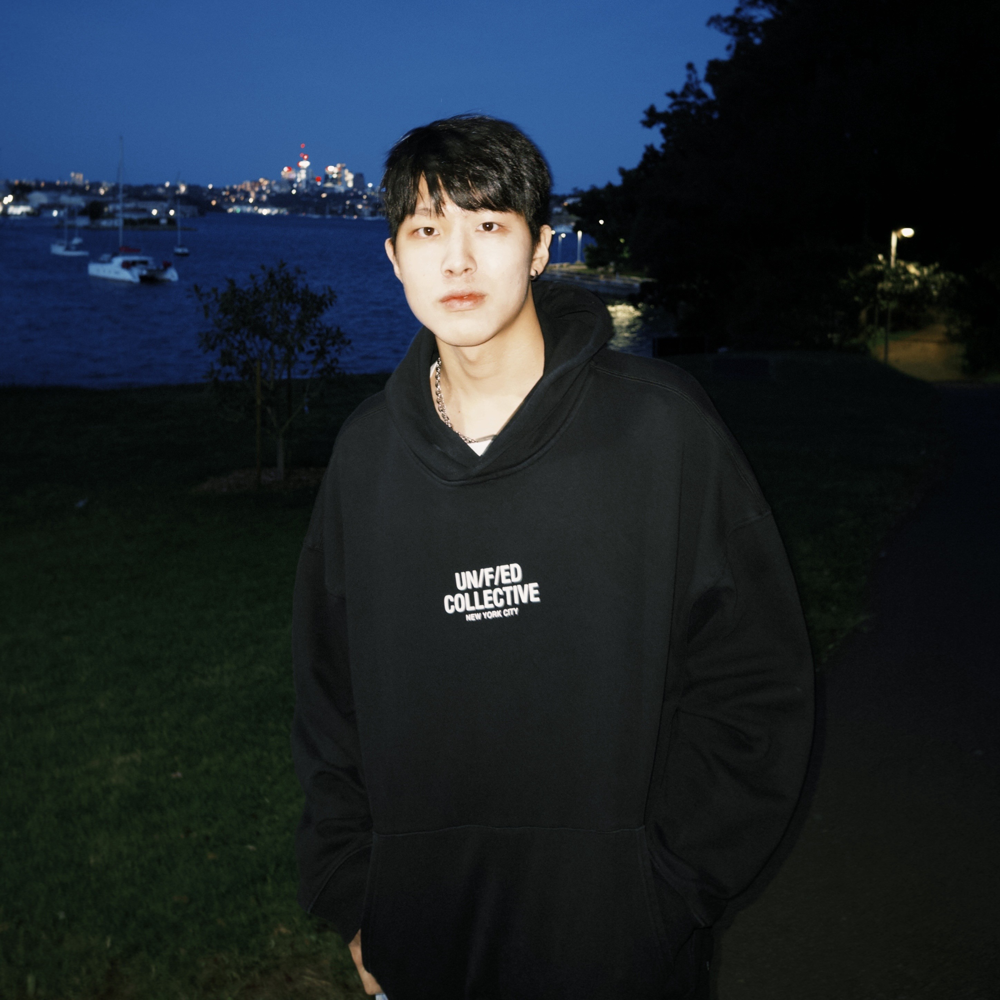

About
Making the complex
feel effortless.

Frank WuJunior UI/UX Designer
Hello, I’m Frank.
I’m a junior UI/UX designer and recent University of Sydney graduate (Bachelor of Design Computing). My goal is to craft simple, thoughtful solutions that merge technology into everyday life.
I believe the best technology is invisible — it simply lets us complete our tasks more seamlessly and intuitively. I focus on transforming complex problems into effortless routines.
My past experience as an English instructor and editor informs this approach, giving me a strong foundation in empathetic communication and clarity. I apply that clarity to design, ensuring every interaction is precise, simple, and immediately understandable.
Download résuméCapabilities
What I bring to a team.
- UI/UX Design
- Prototyping
- User Research
- Wireframing
- Figma
- Design Systems
- Responsive Design
- User Testing
- Interaction Design
- Affinity Diagramming
- Storyboarding
- Usability Testing
Get in touch